Skills


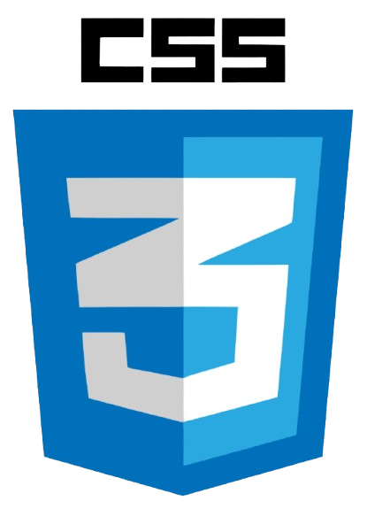

Loading...
Software Developer
I'm a creator who moves fluidly between art, technology, and storytelling. As a software developer, front-end engineer, UX/UI designer, and data scientist, I love building intuitive digital experiences that make complex ideas feel simple and human. But my creativity doesn't stop at code — I'm also an artist, music producer, and violinist, always experimenting with new ways to express emotion visually and sonically.
Graduated: 2025
Campus Organizations: Women in Computing at Cornell, Cornell Data Journal, ALANA International Funding Committee, Southasian Council, Arabic Language House, Prisoner’s Express/Alternatives Library, Muslim Educational and Cultural Association
Relevant Coursework: Intro to Python Object Oriented Programming and Data Structures, Data Science, Consequences of Computing, Intro to Design and Programming for the Web, Networks, Intermediate Design and Programming for the Web, Communication and Technology, Designing Tech for Social Impact, Learning Analytics, Data Driven Web Development, History and Theory of Digital Art, Technology, Behavior, and Society
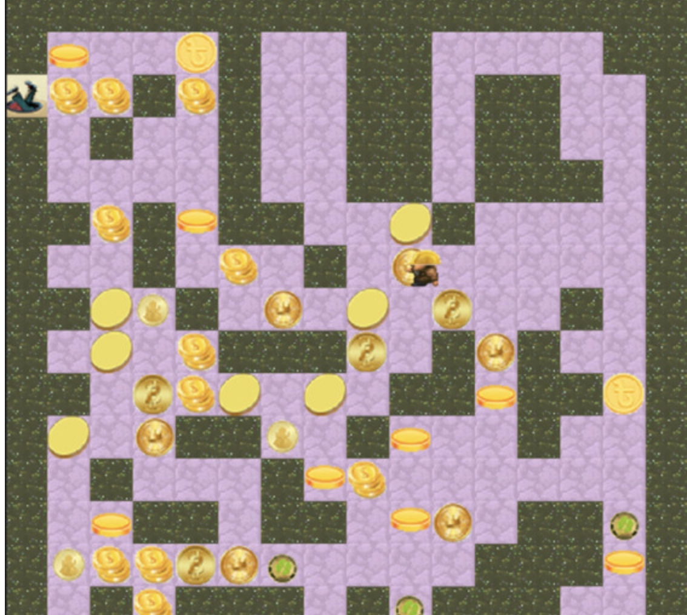
Java Sewer Navigation GUI
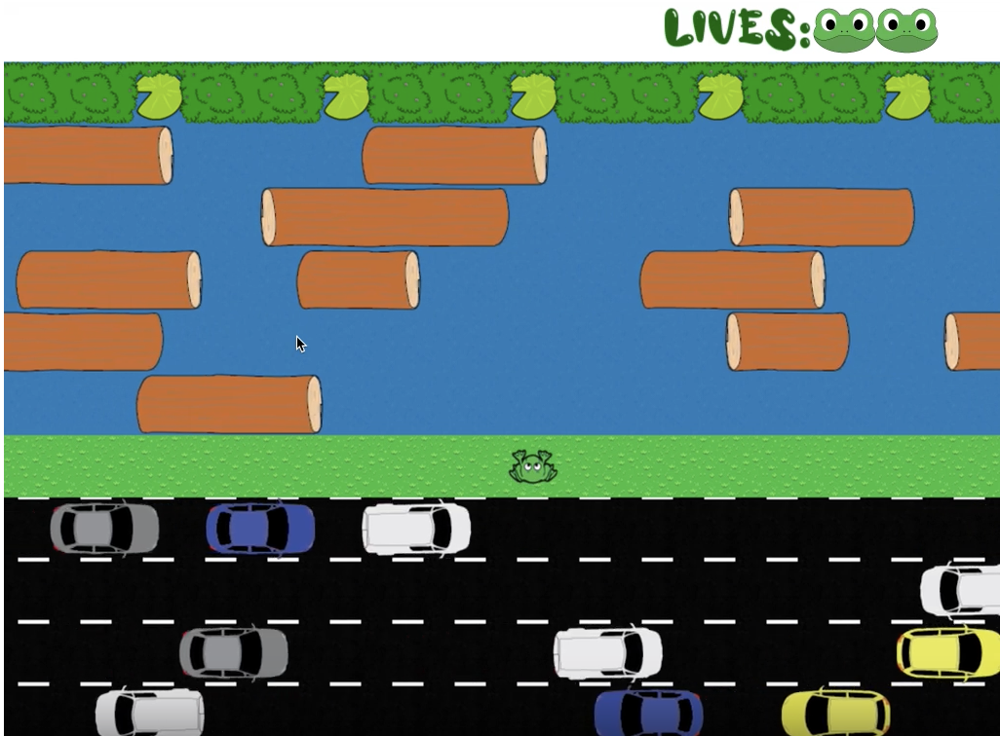
Python Froggit Game
Mental Health App Figma
Mental Health App Xcode
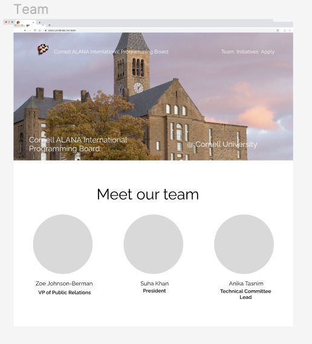
ALANA E-board Website Figma
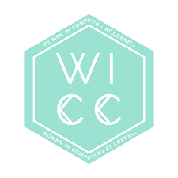
WICC Website Figma
WICC E-board Page
Playful Plants Database Seed Shop
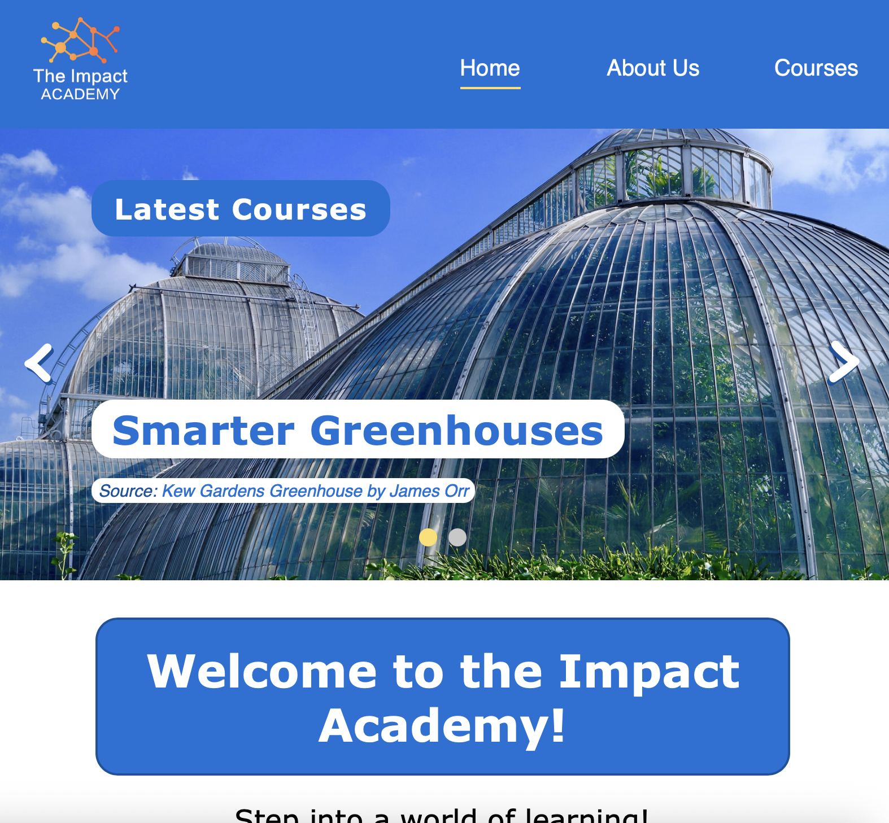
Impact Academy Website
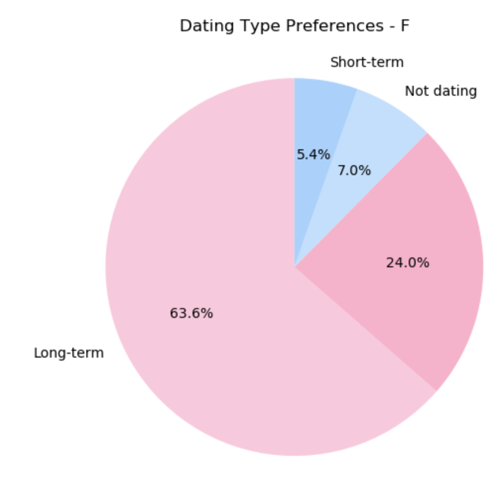
Cornell Relationship Preferences Data Visualizations
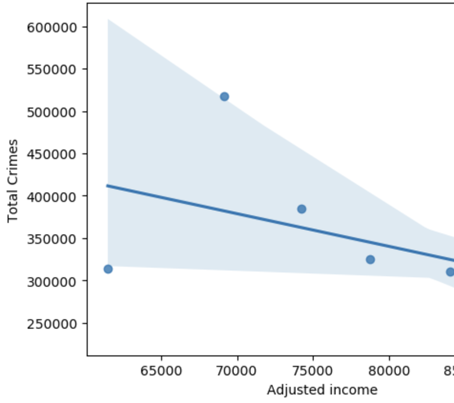
NYC Crime & Income Data Analysis
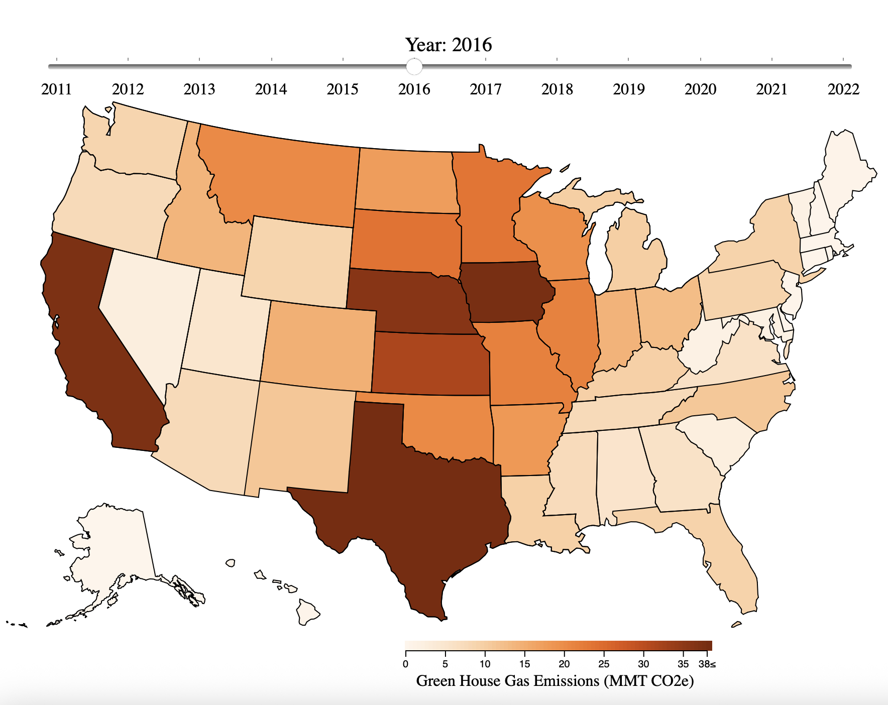
D3 Visualization of Greenhouse Gas Emissions & Food Export Data
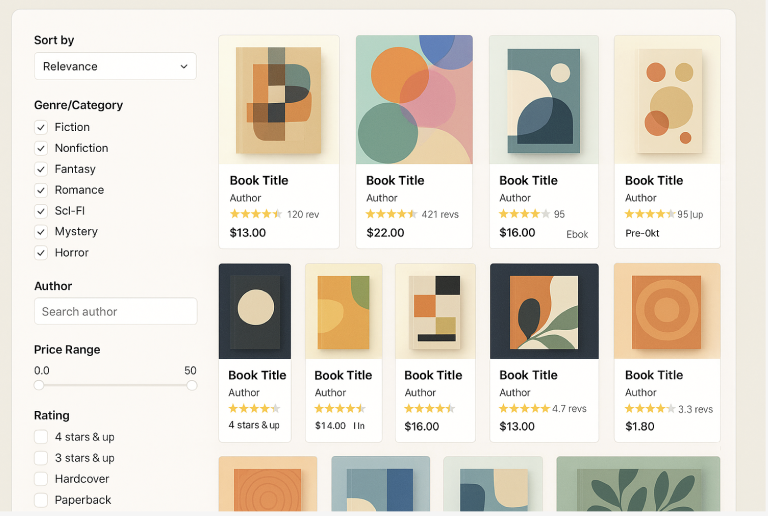
Bookstore E-Commerce Website
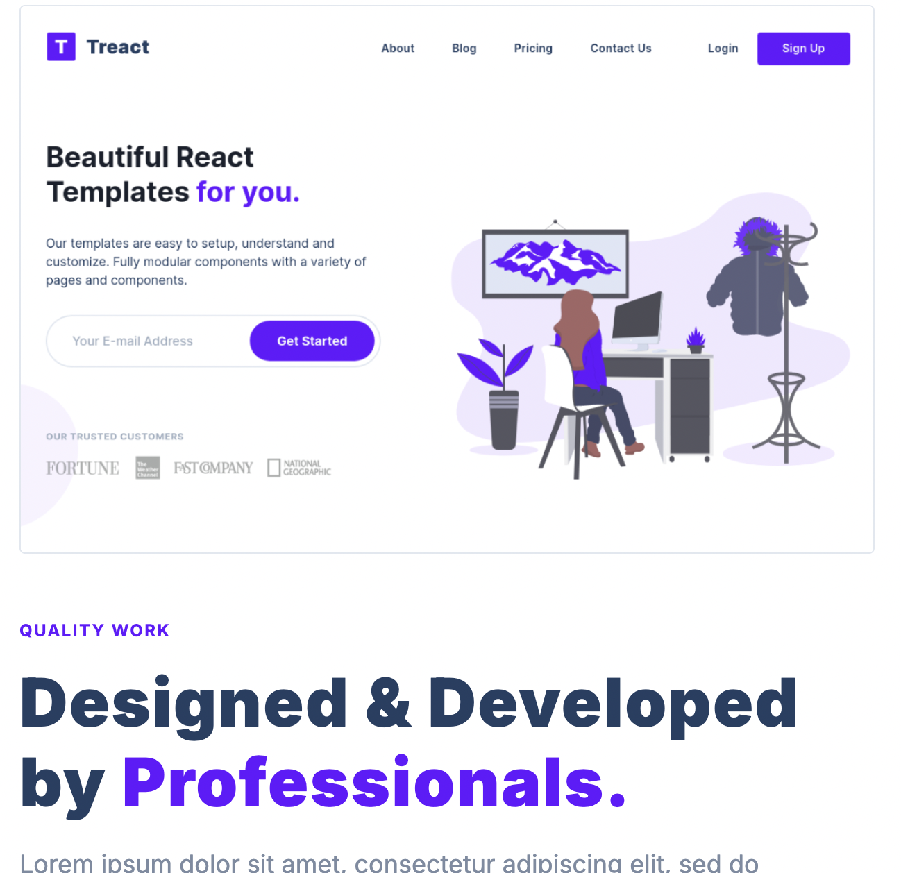
Treact E-Commerce Store

September 2025 – November 2025
June 2024 – Aug 2024
September 2023 – May 2024
June 2022 – May 2023